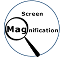

Index
This list of products is for reference purposes only and does not reflect endorsement by the ATRC.
Description
Screen magnification software is used by people with visual disabilities to access information on a computers screen. The software enlarges the information on the screen by pre-determined incremental factor [for example, 1x magnification, 2x magnification, 3x magnification, etc,]. Magnification programs run simultaneously and seamlessly with the computer's operating system and applications. Most screen magnification software has the flexibility to magnify the full screen, parts of the screen or provide a magnifying glass view of the area around the cursor or pointer. These programs also often allow for inverted colours, enhanced pointer viewing and tracking options.
Points to ponder - Questions to consider when shopping for screen magnification software
- Is it compatible with your computer's platform?
- Does it include cursor enhancements?
- What is its maximum magnification?
- Does it include screen reading software?
- Is it compatible with your printer - can you print enlarged material?
- Does it allow for inverted colours?
Screen Magnification Software - Windows 95/98/ME and Windows NT/2000
Although screen magnification products now include "screen readers" if you are using the magnification software on 6x magnification on any size monitor, it is generally recommended that you should be looking at moving to a full screen reader. You can use full screen readers in combination with your magnification software. Be sure you look at both options when purchasing screen magnification software.
- Ai Squared screen magnification software
- ZoomText Express - software specifically designed to help with eye strain, provides 4 levels of magnification from 1-2X.
- ZoomText 9.0 - magnifies text up to 32x, reads most electronic text aloud, and provides cursor and mouse enhancements.
- ZoomText Large Print Keyboard - in addition to providing high contrast letters, the keyboard features 16 buttons dedicated to access features of the ZoomText software.
- Dolphin Computing Systems
- Lunar Screen Magnifier and Lunar Plus Enhanced Screen Enlarger software - includes speech output, usable with a wide variety of Windows applications, magnification up to 32x
- SuperNova - combines speech output, screen magnification and Braille support in one product, magnifies up to 32x
- Freedom Scientific Blind/Low Vision Group offers:
- MAGic - MAGic 8.x adds screen reading to the existing magnification, although it is not JAWS [their screen reading product]. MAGic also has option for inverted colour and cursor enhancements - it does not use a DocReader like ZoomText does for screen reading documents
- Galileo for NT by BAUM [European company, prices in Euro Dollars]
- company also has the VISIO PC integrated CCTV and flatscreen tool for people with visual disabilities
- ION Systems, Inc
- WebEyes - Enlarge or decrease the font size (4 - 144 pt) in Internet Explorer and choose the "Read Like a Book" option to eliminate scrolling
- Reader's Pal
- Simple, free, easy to use software which displays text files and web pages in magnified fonts and high contrast colors.
- Also supports Text-to-Speech Capabilites.
- Magnifying Glass Pro
- An inexpensive screen magnification program with various magnification modes.
- Uses a magnifying lens view that magnifies text and graphics on your computer monitor, attached television screen, or projected onto a larger media during a presentation (e.g., using an application such as PowerPoint).
Screen Magnification Software - Macintosh
- Built in Mac OS Zoom features - accessed through the Universal Access feature
- VisioVoice
- VisionVoice manufactured by Assistiveware, adds multilingual support to Apple's excellent VoiceOver screen reader technology for a number of languages, as well as providing several other speech and vision related features to enhance access to Mac OS X.
Screen Enhancement Software
- Biggy Light in both Macintosh and Windows versions, magnifies cursors and hard to see items such as iBeams to 32x32 or even 32x36 times, more information can be found at the R J Cooper web site
Resources
- The Screen Magnifiers homepage -Reviews of various screen magnification and speech synthesis software